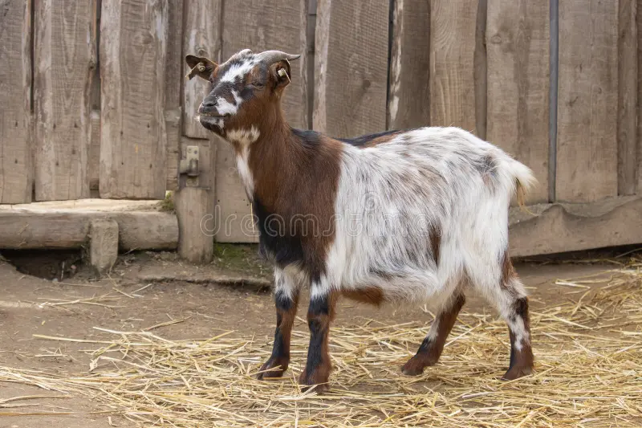
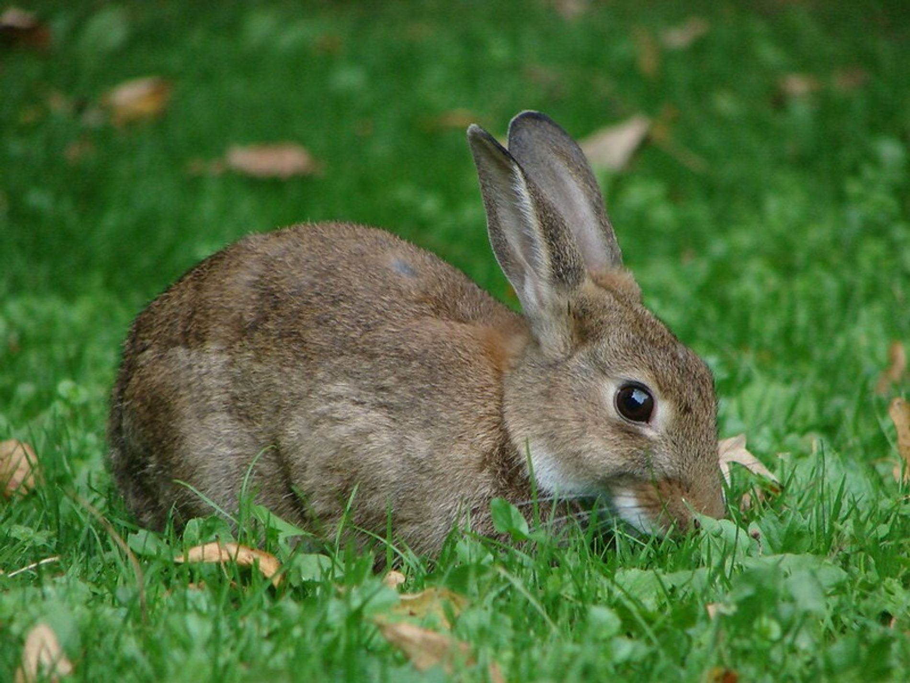
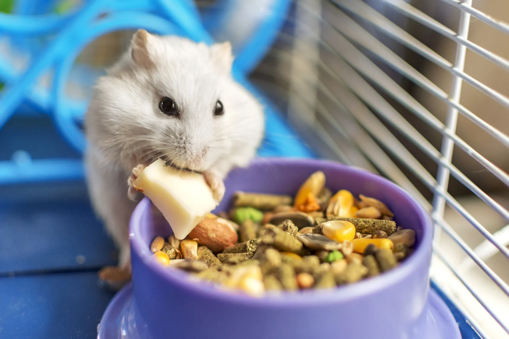

Cloe
Fue mi primera perrita, pequeña pero llena de cariño. Le encantaban las
noches y a veces se escapaba en pequeñas aventuras. Dormía al pie de mi cama, como cuidando mis
sueños, y ladraba al verme llegar, como diciendo “te extrañé”. Cloe no fue solo una mascota, fue
compañía y el primer amor que me enseñó lo que significa querer a un animal.

Kristofer
es mi gato, un compañero único que combina independencia y cariño. Puede pasar horas en
su mundo, pero también sabe cuándo acercarse y acompañarme en silencio. Recorre la casa como si
fuera su reino y demuestra su amor con su presencia tranquila, quedándose cerca o compartiendo
momentos conmigo como un pequeño ritual.

Kira
es una gata de carácter fuerte, de esas que no toleran bobadas ni juegos innecesarios. Tiene
una actitud seria y dominante, como si todo a su alrededor le perteneciera. A veces puede ser
algo agresiva, marcando muy bien sus límites, pero eso hace parte de su personalidad única.

Cabrita
Mi cabra es pequeña, inquieta y sorprendentemente cariñosa. Tiene unos ojos curiosos que parecen
entenderlo todo y una forma graciosa de seguirme a todos lados, como si fuera un perrito. Le
encanta subirse a cualquier lugar y mordisquear hojas, siempre en busca de su próxima travesura.

Conejin
Conejín es mi conejo, pequeño, suave y muy tranquilo. Tiene una forma tierna de moverse, dando
saltitos cortos mientras explora todo a su alrededor. Le gusta quedarse cerca, en silencio, como
si su compañía fuera suficiente para llenar el momento.

Hansturro
Hansturro es mi hámster, pequeño, inquieto y lleno de energía. Siempre está corriendo de un lado
a otro, como si tuviera mil cosas importantes que hacer en su diminuto mundo. Tiene una
curiosidad infinita y una forma graciosa de mirarme mientras mastica, como si pensara más de lo
que parece.
